国密算法学习笔记
[TOC]
1.概述
国密算法是国家商用密码算法的简称。自 2012 年以来，国家密码管理局以《中华人民共和国密码行业标准》的方式，陆续公布了 SM2/SM3/SM4 等密码算法标准及其应用规范。其中“SM”代表“商密”，即用于商用的、不涉及国家秘密的密码技术。[1]
国密规范标准文件列表：http://www.gmbz.org.cn/main/bzlb.html
2.SM2
2.1. 简介
SM2 为基于椭圆曲线密码的公钥密码算法标准，包含数字签名、密钥交换和公钥加密，用于替换 RSA/Diffie-Hellman/ECDSA/ECDH 等国际算法。其
私钥长度：32字节。
公钥长度：SM2非压缩公钥格式字节串长度为65字节，压缩格式长度为33字节，若公钥y坐标最后一位为0，则首字节为0x02，否则为0x03。非压缩格式公钥首字节为0x04。
签名长度：64字节。
2.2. 椭圆曲线及参数
2.2.1 基础概念
2.2.1.1 群
数学意义上的群是一个集合和定义在这个集合上的二元运算，我们不妨把这个二元运算称之为“加法”，并用符号+表示。为了使集合G成为一个群，我们必须定义加法（区别于算术加法），使其服从以下四个性质:
- 封闭性：如果a和b都属于G，则a+b也属于G；
- 结合律：对于G中的任意元素a、b和c，都有（a+b）+c=a+（b+c）成立；
- 单位元：G中存在单位元0，对于G中任意元素a，都有a+0=0+a=a成立
- 逆元：对于G中任意元素a，G中都存在元素b，使得a+b=b+a=0成立。G就叫作一个群，记为（G，+） 如果我们加上第五个属性：
- 交换律：a+b=b+a 这样的群被称作交换群（Abel群）
例子
用通常的算术加法概念，整数Z的集合是一个群(此外，它是一个交换群)。然而，自然数N的集合不是一个群，因为第四个性质不能被满足。
椭圆曲线上的群
- 该群的元素是椭圆曲线上的点；
- 单位元是无穷远处的点0
- 点P的逆元是椭圆曲线上关于x轴对称的点；
- 加法由以下规则给出:给定三个在一条直线上的非零点P、Q和R，它们的和为P+Q+R=0
定义在椭圆曲线上群的加法运算
在椭圆曲线上，我们将加法群和曲线对应为：
-
我们将曲线上的点对应到群上的元素。
-
单位元素定义为曲线上的无穷大处的点。
-
点P的逆元，表示为关于x轴对称的点。
加法定义为：给定曲线上三个点P, Q, R，三个点在一个直线上，使得 P + Q + R = 0现在我们推导一下 P + Q + R = 0， 所以 P + Q = -R, 在图像上表示为 R，关于 x 轴的对称点：
如果P和Q不是同一个点，我们可以计算两点连线的斜率
这条线与椭圆曲线的交点是第三点
或者等价的有：
最终我们有：
注意符号，P + Q = - R，即使P或Q中的一个是切点，上述方程也是有效的。
P=Q的情况需要有一点不同的处理: 计算 和
的方程是相同的，但是考虑到
，我们要重新计算斜率（实际上就是过P点的切线斜率）：
上面的两种情况在写代码是由要注意区分。
定义在椭圆曲线上群的乘法运算
除了加法，我们可以定义另一种运算:标量乘法，即:
但是该中标量乘法，那么我们的算法复杂度是 ，效率不是很高。
介绍了一种更快的计算标量乘法的算法，通过将n转化为二进制形式，例如
这样我们计算 时，可以转化成如下形式：
优化后的算法复杂度是 ，如果考虑n的二进制位数k，算法的复杂度是
2.2.1.2 有限域
有限域 $$F_q$$，其中 q 是一个奇素数或是 2 的幂：
- （素域）当 q 为奇素数时，$$q=p$$，表示为 $$F_p$$，其中 $$p > 2^{191}$$
- （二元扩域）当 q 为 2 的幂，$$q=2^m$$，表示为 $$F_{2^m}$$，其中 $$m>192 $$ 且为素数
有限域 $$F_q$$必须是一个包含有限数量元素的集合。有限域的一个例子就是模p的整数集，其中p是素数。在域中我们需要定义加法(+)和乘法(*)的二元运算，两者都满足封闭性，结合律和交换律。对于这两个操作，每个元素都有一个唯一的单位元，一个唯一的逆元。
例子
有限域的一个实例就是模质数p的整数集$$F_p$$，它是定义在整数集$${0,1,2…p-1}$$上。$$F_p$$的加法和乘法分别就是模加法和模乘法，$$F_{23}$$的一些操作：
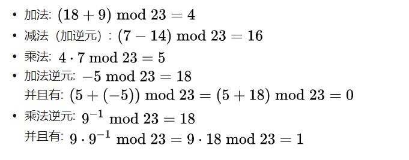
请注意，这里的 必须是一个质数！模4整数集就不是一个域: 因为2没有乘法逆(即等式
没有解)。
有限域中的除法可以通过利用扩展欧几里德算法可以“轻松”地计算乘法逆元，在最坏的情况下，算法的时间复杂度是 (或者
，如果我们考虑p的比特长度的话)。本质上我们可以认为
，即把x除以y看成是x乘上y的乘法逆元。实现的 python例子。
2.2.1.3 有限域中的椭圆曲线
两类椭圆曲线实质是有限域质数的选取不同，有限域质数的选取也决定了其域的规模。
上图展示了如何在曲线 上计算点加法，其中
。注意连接点的线
是如何在平面内“重复”出现的，这是$$F_p$$ 中的直线区别于实数域直线的一个重要特征。
在椭圆曲线中加入有限域的概念后，定义的点加法还需要满足以下性质：
(根据单位元的定义).
- 给定非零点
，
。例如，如果 $$F_{29}$$中的曲线有一个点
，则逆元是
。
- 此外，
(根据逆元的定义)。
2.2.1.4. 椭圆曲线群的阶和子群的阶
群组的阶：可以表述为群组中所有元素的数量，记作p。
一个群中的元素数量称为这个群的阶，即对应到椭圆曲线群的阶就是：在有限域上定义的椭圆曲线包含的点的数量。我们尝试把0到p-1的所有整数x代入方程，然后对于每个x都找到所有满足方程的解，这样我们就找到了曲线上所有的点。但是这样的算时间复杂度为 ，这样做不够高效，有一个更快的计算阶的算法:Schoof’s algorithm。
子群：首先是一个群，并且它的所有元素是另一个群的非空子集。
循环子群：是元素循环重复的子群，循环群中的每个元素都可以写成是一个基本元素的倍数（后面的子群都是循环子群）。
椭圆曲线的点乘法有一个有趣的性质。取 曲线上的点
。现在我们计算出所有P的点乘倍数:

- …
在这里，我们可以立即发现：P的倍数只有5个点，椭圆曲线的其他点从未出现过。其次，它们是循环重复的。我们可以写作:
这五个方程可以被“压缩”成一个方程：
基点的选取根据循环群中的每个元素都可以写成是一个基本元素的倍数，就像我们在前面的例子中展示的那样。我们把点P这样的基本元素称为循环子组的生成器或基点。
2.2.1.5 子群的阶
由上述基点P所产生的子群的阶不能使用上文提到的Schoof算法来计算，因为该算法只适用于整个椭圆曲线，而不适用于子群。为了解决这个问题，引入定义如下：
- 我们已经将阶定义为一个群的元素数量。这个定义仍然有效，但是在循环子组中，我们可以给出一个新的等价定义: **子群P的阶是使得
的最小的正整数
**。
- 子群P的阶可以通过拉格朗日定理与椭圆曲线群的阶相联系，拉格朗日定理指出子群的阶是父群阶的除数。换句话说，如果椭圆曲线包含
个点，并且它的一个子群包含
这两个信息组合在一起就给我们提供了一种找出一个基点为 的子群的阶的思路：
- 使用Schoof算法计算椭圆曲线群的阶数
- 找到
- 对每个
；
- 使
成立的最小
当N是合数，它有很多整数，但是如果是一个素数，将只有1和本身。此时我们考虑一种特殊情况：假设一个椭圆曲线群的阶数 是质数，那么这个椭圆曲线的子群的阶就只有两种情况：
- 子群的阶是1，此时的子群只包含一个点0；
- 子群的阶是N，此时的子群包含椭圆曲线上的所有点
2.2.1.6 寻找一个基点
对于我们的ECC算法，我们需要的是高阶的子群。所以一般来说，我们会选择一条椭圆曲线，计算它的阶数 ，选择一个较大的除数作为子群阶数
，最终找到一个合适的基点。也就是说:我们不会选择一个基点然后计算它的阶，相反，**我们会首先选择一个看起来足够好的阶（也就是足够大），然后我们会寻找一个合适的基点。**下面详细讨论这一过程：
有鉴于此，我们的算法概述如下：
- 计算椭圆曲线的阶数
- 选择子群的阶数
- 计算余因子
- 选择椭圆曲线上的一个随机点
- 计算
- 若
, 就回到步骤4， 否则，我们就找到了一个子群的基点，阶数为
请注意，此算法仅在 是质数时有效。如果
不是质数，那么
的阶数可能是
的除数之一。
2.2.1.7 椭圆曲线密码学
ECC算法流程：
- 从
中随机选择一个整数
作为私钥（
- 计算公钥
（
是循环子群的基点）我们注意到，如果我们已知
（标量乘）是很容易的。但是在已知
ECDH（Elliptic curve Diffie-Hellman，一种加密算法）本质上是一个密钥协商协议，而不是一个加密算法。对于通讯双方定义了密钥生成和交换的规则，至于怎么用密钥对数据进行加密，取决于其他的算法。
ECDSA（Elliptic Curve Digital Signature Algorithm，一种签名算法）：ESCDA处理的实际上是消息的哈希值，而不是消息本身。哈希函数是可选择的，但这个哈希函数必须是一个密码学安全的哈希函数。消息的哈希值需要截取一个固定的长度 ，这个长度是
（子群的阶）的二进制位数。截取后的哈希值是一个整数，我们记为
。
2.2.2 椭圆曲线
两类椭圆曲线实质是有限域质数的选取不同，有限域质数的选取也决定了其域的规模。
-
$$F_p$$ 上的椭圆曲线
方程为：$$y^2 =x ^3 +ax+b$$，$$a,b \in F_p$$，且$$(4a^3 +27 b^2) mod \ p \neq 0$$
椭圆曲线的定义为：$$E(F_p) = {(x,y)|x,y \in F_p, y^2 =x ^3 +ax+b} \cup {O}$$，O 是无穷远点
椭圆曲线 $$E(F_p)$$ 上的点的数目称为椭圆曲线 $$E(F_p)$$ 的阶。（有限域的元素数量）
-
$$F_{2^m}$$ 上的椭圆曲线
方程为：$$y^2 +xy =x ^3 +ax^2+b$$，$$a,b \in F_p$$，且$$b \neq 0$$
椭圆曲线的定义为：$$E(F_{2^m}) = {(x,y)|x,y \in F_{2^m}, y^2 +xy =x ^3 +ax^2+b } \cup {O}$$，O 是无穷远点
椭圆曲线 $$E(F_{2^m})$$ 上的点的数目称为椭圆曲线 $$E(F_{2^m})$$ 的阶
2.2.3 椭圆曲线参数
-
$$F_p$$ 上的椭圆曲线
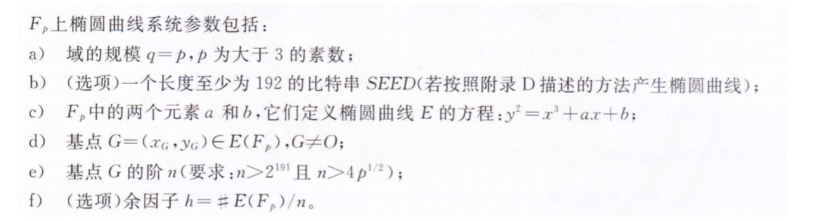
-
$$F_{2^m}$$ 上的椭圆曲线
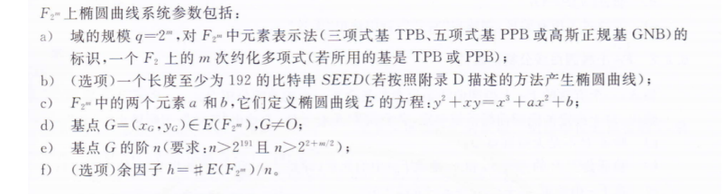
确定一条椭圆曲线具体需要哪些参数分析：
- 参数a, b 确定一条椭圆曲线的形状
- 一个质数P用于描述有限域的大小
- 一个用于生成循环子群的基点G
- 子群（循环子群）的阶数n
- 子群的协因子
（
，其中
这六个参数 联合起来定义了一种ECC算法所用到的椭圆曲线。
在代码上主要抓住两个部分：
- 椭圆曲线群组中的点的运算。（加法和乘法）
- 椭圆曲线有限域中横纵坐标的加减乘除运算。（除法采用扩展殴几里德算法）
- 然后就是按照文档的步骤实现即可。
2.3 密钥对生成和公钥验证算法
2.3.1 密钥对生成
-
输入：一个有效的 $$F_q$$ 上的椭圆曲线系统参数
-
步骤：
a. 生成随机数 $$d \in [1,n-2]$$
b. G 为基点，计算 $$P(x_p,y_p)$$ 点，$$P=G^d$$
c. 生成密钥对是 $$(d,P)$$，其中 $$d$$ 是私钥，$$P$$ 是公钥
-
输出：密钥对 $$(d,P)$$
2.3.2 公钥验证
- 输入：
a. 一个有效的 $$F_q$$ 上的椭圆曲线系统参数
b. 公钥 $$P(x_p,y_p)$$ 。
- 步骤（验证公钥是否有效本质上就是在验证 P 点是否在椭圆曲线上）：
a. 验证 P 点不是无穷远点
b. 验证坐标 $$x_p$$ 和 $$y_p$$ 是否是区间 $$[0,p-1]$$ 内。
c. 验证 $$y_p^2=x_p^3+ax_p+b(mod \ p)$$ 或 $$y_p^3+x_py_p = x_p^3+ax_p^3+b$$
d. 验证 $$p^n=O$$
- 输出：若以上验证均成功，则输出”有效“，否则为无效
2.4 数字签名算法
数字签名算法由一个签名者对数据产生数字签名 ,并由一个验证者验证签名 的可靠性 。每个签名者有一个公钥和一个私钥 ,其 中私钥用于产生签名 ,验证者用签名者的公钥验证签名 。在签名的生成过程之前 ,要用密码杂凑函数对$$\overline{M}$$(包 含 $$Z_A$$ 和待签消息M)进行压缩 ;在 验证过程之前 ,要用密码杂凑函数对 $$\overline{M}$$ (包含 $$Z_A$$和待验证消息 M′ )进行压缩 。
2.4.1. 用户身份杂凑值
-
参数信息：
假设用户 A 的身份标识为 $$ID_A$$，长度为 $$ENTL_A$$。
椭圆曲线方程的参数为 a，b，基点 G 的坐标为 $$(X_G,Y_G)$$，用户 A 的公钥 $$P_A$$ 的坐标为 $$(X_A,Y_A)$$。
-
步骤：
用户 A 的
杂凑值（Z值只是用来计算杂凑值的一个运算因子，并不是杂凑值）$$Z_A = H_{256}(ENTL_A || ID_A || a || b || x_G || y_G || x_A || y_A)$$ -
参数说明：
- $$ENTL_A$$：为2个字节标识的ID的比特长度。
- $$ID_A$$：为用户身份标识。无特殊约定的情况下，用户身份标识ID的长度为16字节，其默认值从左到右依次为：
0x31,0x32,0x33,0x34,0x35,0x36,0x37,0x38,0x31,0x32,0x33,0x34,0x35,0x36,0x37,0x38。 - $$a,b$$：为系统曲线参数。
- $$x_G, y_G$$：为基点；
- $$x_A,y_A$$：为用户的公钥。
-
预处理2是指使用Z值和待签名消息，通过SM3运算得到杂凑值H的过程。杂凑值用于SM2数字签名。
- 输入：
- $$Z_A$$：字节串，预处理2的输入。
- M：字节串，待签名消息。
- 输出：
- H：字节串，杂凑值。
- 计算公式：
- $$H=SM3(Z_A||M)$$
- 输入：
2.4.2. 签名算法
-
输入：
a. 待签名的消息 $$M$$
b. 用户 A 信息的杂凑值 $$Z_A$$
c. 用户 A 的私钥 $$d_A$$
-
步骤：
a. 置 $$\overline{M} = Z_A || M$$
b. 使用 SM3 计算杂凑值 $$e=H_v(\overline{M})$$ 等价于公式 $$H=SM3(Z_A||M)$$ 取前v个bit。
c. 生成随机数 $$k \in [1,n-2]$$
d. 计算椭圆曲线点 $$G^k=(x_1,y_1)$$
e. 计算 $$r=(e+x_1)mod\ n$$，若 $$r=0$$ 或 $$r+k=n$$，返回步骤 c
f. 计算 $$s = (\frac{k-r \cdot d_A}{1+d_A})mod \ n $$，若 $$s=0$$，返回步骤 c
-
输出：
签名消息为 $$(r,s)$$
2.4.3. 验签算法
-
输入：
a. 待签名消息 $$M'$$
b. $$M'$$ 的签名消息 $$(r’, s’)$$
c. 用户 A 信息的杂凑值 $$Z_A$$
d. 用户 A 的公钥 $$P_A $$
-
步骤：
a. 验证 $$r’ \in [1, n-1]$$
b. 验证 $$s’ \in [1,n-1]$$
c. 置 $$\overline{M’} = Z_A || M'$$
d. 使用 SM3 计算杂凑值 $$e=H_v(\overline{M’})$$
e. 计算 $$t=(r'+s’)mod \ n$$，验证 $$t != 0$$
f. 计算 $$(x’,y’)=G^{s’}+P_A^{t}$$
g. 计算 $$R=(e'+x_1’)mod \ n$$，验证 $$R=r'$$
化简：
$$G^{s’}+P_A^{t} = G^{s’} + G^{(d_A \ mod \ n )\cdot t’} = G^{(s'+d_A \cdot t’) mod \ n} = G^{(s'+d_A \cdot (r'+s’)) mod \ n}$$
$$= G^{(s’(1+d_A) + d_A \cdot r’)mod \ n} = G^{(\frac{k-r’ \cdot d_A}{1+d_A}(1+d_A) +d_A \cdot r’) mod \ n} $$
$$= G^{(k-r’ \cdot d_A + r’ \cdot d_A) mod \ n} = G^k$$
-
输出：
若步骤 a，b，e，g 都验证通过，则输出验证成功，否则输出验证失败
2.4.4. 数字签名算法实现

2.5 密钥交换算法
密钥交换是指在用户 A，B 之间进行密钥交换协商的过程。用各自的私钥和对方的公钥来商定一只只有他们知道的秘密密钥。这个共享的秘密密钥通常用在某个对称密码学算法中，该密钥交换协议能够用于密钥管理和协商。
2.5.1 密钥交换算法
-
相关参数
a. 用户 A 的私钥 $$d_A$$，公钥 $$P_A $$
b. 用户 B 的私钥 $$d_B$$，公钥 $$P_B$$
c. 用户 A 的杂凑值 $$Z_A = H_{256}(ENTL_A || ID_A || a || b || x_G || y_G || x_A || y_A)$$
d. 用户 B 的杂凑值 $$Z_B = H_{256}(ENTL_B || ID_B || a || b || x_G || y_G || x_B || y_B)$$
e. $$w= \lceil (\lceil log_2(n) \rceil /2) \rceil - 1$$
f. $$h$$ 为 $$n$$ 的余因子
-
步骤
- 用户 A：产生随机数 $$r_A \in [1,n-1]$$，并计算 $$R_A = G^{r_A} = (x_1,y_1)$$，将 $$R_A$$ 发送给 B。
- 用户 A：计算 $$\overline{x_1} = 2^w +(x_1 \ & \ (2^w-1))$$，代入计算 $$t_A = (d_A + \overline{x_1} \cdot r_A) mod \ n $$
- 用户 B：产生随机数 $$r_B \in [1,n-1]$$，并计算 $$R_B = G^{r_B} = (x_2,y_2)$$
- 用户 B：计算 $$\overline{x_2} = 2^w +(x_2 \ & \ (2^w-1))$$，代入计算 $$t_B = (d_B + \overline{x_2} \cdot r_B) mod \ n $$
- 用户 B：验证 $$R_A$$ 是否满足曲线的方程，如果不满足，则协商失败，终止（参考 2.3.2 公钥验证）。
- 用户 B：计算 $$\overline{x_1} = 2^w +(x_1 \ & \ (2^w-1))$$，代入计算 $$V = (P_A+R_A^{\overline{x_1}})^{h \cdot t_B} = (x_V,y_V)$$，验证 $$V \ ?=0$$，如果是，则协商失败，终止。
- 用户 B：计算 $$K_B = KDF(x_V||y_V||Z_A||Z_B,klen)$$，代入计算哈希值 $$S_B = Hash(0x02 ||y_V ||Hash(x_V || Z_A || Z_B || x_1 ||y_1||x_2||y_2))$$，将 $$R_B$$ 和 $$S_B$$ 发送给用户 A
- 用户 A：验证 $$R_B$$ 是否满足曲线的方程，如果不满足，则协商失败，终止（参考 2.3.2 公钥验证）。
- 用户 A：计算 $$\overline{x_2} = 2^w +(x_2 \ & \ (2^w-1))$$，代入计算 $$U = (P_B + R_B^{\overline{x_2}})^{h \cdot t_A} = (x_U,y_U)$$，验证 $$U \ ?=0$$，如果是，则协商失败，终止。
- 用户 A：计算 $$K_A= KDF(x_U||y_U||Z_A||Z_B,klen)$$，代入计算哈希值 $$S_1 = Hash(0x02 ||y_U||Hash(x_U || Z_A || Z_B || x_1 ||y_1||x_2||y_2))$$
- 用户 A：验证 $$S_1 \ ?= S_B$$，若不一致，则协商失败，终止。
- 用户 A：计算 $$S_A = Hash(0x03 ||y_V||Hash(x_V|| Z_A || Z_B || x_1 ||y_1||x_2||y_2))$$ ，并将 $$S_A$$ 发送给用户 B。
- 用户 B：计算 $$S_2 = Hash(0x03 ||y_U||Hash(x_U|| Z_A || Z_B || x_1 ||y_1||x_2||y_2))$$ ，验证 $$S_2 \ ?= S_A$$，若不一致，则协商失败，终止。
- 协商成功，$$K_A$$，$$K_B$$ 即为协商的密钥，而后续的 $$S_1$$，$$S_2$$，$$S_A$$，$$S_B$$ 验证则为可选项。
推导 $$K_A = K_B$$：
$$V = (P_A+R_A^{\overline{x_1}})^{h \cdot t_B} = (G^{d_A} +(G^{r_A})^{\overline{x_2}})^{h \cdot t_B} = (G^{d_A + \overline{x_2} \cdot r_A })^{h \cdot t_B} = (x_V,y_V)$$
$$U = (P_B + R_B^{\overline{x_2}})^{h \cdot t_A} = (G^{d_B}+(G^{r_B})^{\overline{x_2}})^{h \cdot t_A} = (G^{d_B+\overline{x_2} \cdot r_B})^{h \cdot t_A} = G^{h \cdot t_A \cdot t_B} = (x_U,y_U)$$
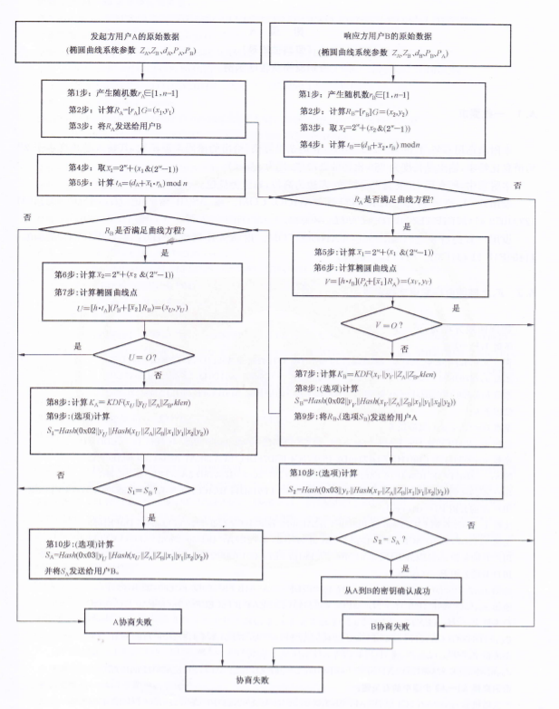
2.5.2 密钥交换算法实现
2.6 非对称加解密算法
2.6.1 密钥派生算法（KDF）
-
杂凑函数
a. 密码杂凑函数 $$H_v()$$，其中 v 是杂凑值的长度
-
输入：
a. 比特串 Z
b. 派生出来的密钥长度 $$klen$$
-
步骤：
a. 设置计数器 ct=1
b. for $$i=1; k<\lceil klen/v \rceil; i++$${
$$H_{a_i} = H_v(Z || ct)$$
$$ct++$$
}
c. 若 $$klen/v$$ 为整数，令 $$Ha!{\lceil klen/v \rceil} =Ha{\lceil klen/v \rceil}$$;
否则，$$Ha!{\lceil klen/v \rceil} = Ha{\lceil klen/v \rceil}[0,klen-(v \times \lfloor klen/v \rfloor)-1] $$
d. 令 $$K=Ha_1 || Ha_2 || … || Ha_{\lceil klen/v \rceil -1} || Ha!_{\lceil klen/v \rceil }$$
-
输出
密钥 $$K$$
2.6.2 加密算法
-
输入：
a. 待加密的信息 $$M$$，长度为 $$klen$$
b. 用户 B 的公钥 $$P_B$$
-
步骤：
a. 生成随机数 $$k \in [1,n-1]$$
b. 计算 $$C_1 = G^k =(x_1,y_1)$$
c. 计算 $$S=P_B^h$$，若 $$S=O$$，则报错（h 为 n 的余因子）
d. 计算 $$P_B^k=(x_2,y_2)$$
e. 派生密钥 $$t=KDF(x_2||y_2,klen)$$，若 t 为全 0 的比特串，返回步骤 a
f. 计算 $$C_2= M \oplus t$$
g. 计算哈希值 $$C_3 =Hash(x_2 || M || y_2)$$
-
输出：
密文 $$C = C_1 || C_3 || C_2$$
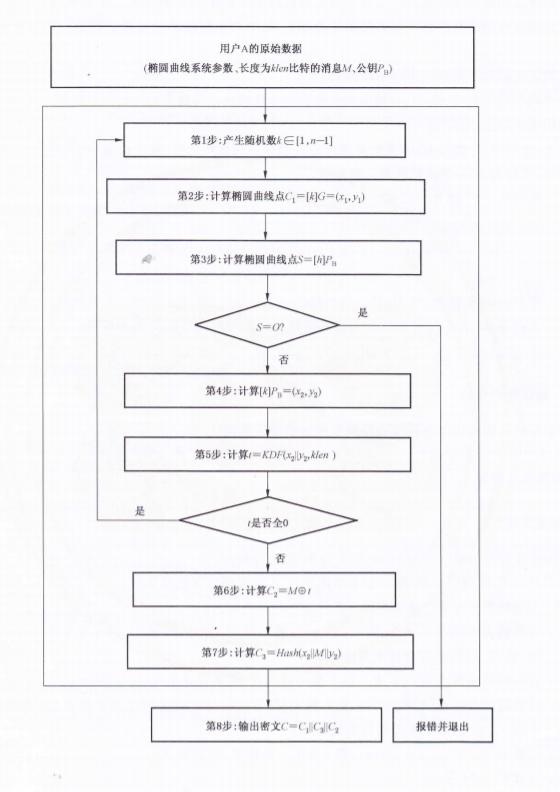
2.6.3 解密算法
-
输入：
a. 密文 $$C = C_1 || C_2 || C_3$$
b. 用户 b 的私钥 $$d_A$$
-
步骤：
a. 验证 $$C_1$$ 是否满足曲线方程
b. 计算 $$S = C_1^h$$，若 $$S=O$$，则报错
c. 计算 $$C_1^{d_B} = (x_2,y_2)$$
d. 计算 $$t = KDF(x_2||y_2,klen)$$，若 t 为全 0 的比特串，则报错
e. 计算 $$M'= C_2 \oplus t $$
f. 计算 $$u = Hash(x_2||M'||y_2)$$，验证 $$u = C_3$$，若验证失败则报错
-
输出：
明文 $$M'$$
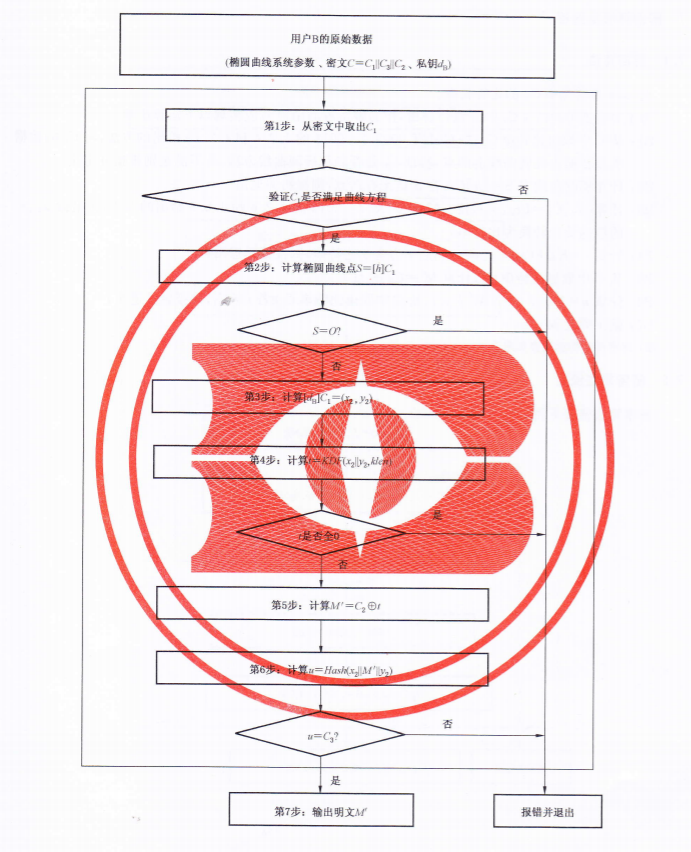
2.6.4 加解密算法实现
3.SM3
3.1 简介
SM3 为密码哈希算法，用于替代 MD5/SHA-1/SHA-256 等国际算法。
3.2 密码杂凑算法
密码杂凑算法的输入值 $$m$$，是长度为 l 的比特消息（$$l < 2^{64}$$）。
3.2.1 填充
- 消息 $$m$$ 后填充一位 1
- 再填充 $$k$$ 位的 0，使得 $$(l+1+k)mod \ 512 =448$$
- 再添加 64 位比特串，内容为 $$l$$ 的二进制表示
- 填充后的完整消息为 $$m’$$

3.2.2 迭代压缩
-
迭代处理
a. 将 $$m'$$ 以512位为单位进行分组，$$m'=B_0||B_1||……||B_{n-1}$$，其中 $$n = (l+k+65)/512$$
b. 从 0 到 n-1 逐个进行迭代：$$V_{i+1} = CF(V_i,B_i)$$，其中 $$CF()$$ 为压缩函数，$$V_0$$ 是一个初始值 IV，为一个固定值
$$V_n$$ 就是杂凑值
3.2.3 压缩函数CF()
-
消息扩展
a. 将 $$B_i$$ 划分成16份，$$B_i = W_0 || W_1 || W_2 || … || W_{15}$$
b. for j=16; j<=67; j++ {
$$W_j = P_1(W_{j-16}) \oplus W_{j-9} \oplus (W_{j-3} «<15) \oplus (W_{j-1} «< 7) \oplus W_{j-6} $$
}
c. for j=0 ;j++; j<=63{
$$W’j=W_j \oplus W{j+4}$$
}
-
压缩函数
a. 令 $$V_i = ABCDEF$$
b. for j=0;j<64;j++{
$$SS1 = (A«<12)+E+(T_j «<(j \ mod \ 32))«< 7$$
$$SS2 = SS1 \oplus (A «< 12)$$
$$TT1 = FF_j(A,B,C) +D + SS2 + W_j'$$
$$TT2 = GG_j(E,F,G)+H+SS1+W_j$$
$$D = C$$
$$C = B «< 9$$
$$B = A$$
$$A = TT1$$
$$H = G$$
$$G = F «<19$$
$$F = E$$
$$E = P_0(TT2)$$
}
c. 计算 $$V_{i+1} = ABCDEFGH \oplus V_i $$
4.SM4
4.1 简介
SM4 为分组密码，用于替代 DES/AES 等国际算法。
SM4 密码算法是一个分组算法，该算法的分组长度为 128 比特，密钥长度为 128 比特。加密算法和密钥扩展算法都采用 32 轮非线性迭代。
分组加密（英语：Block cipher），又称分块加密或块密码，是一种对称密钥算法。它将明文分成多个等长的模块（block），使用确定的算法和对称密钥对每组分别加密解密。
4.2 分组加密算法
对于每一个分组长度为 128 比特的明文分组，进行加密。
-
参数说明：
加密密钥：$$MK=(MK_0,MK_1,MK_2,MK_3)$$，其中$$MK_i$$ 为 32 比特，$$MK$$ 总共为 128 比1特。
轮密钥：$$(rk_0,rk_1,…,rk_{31})$$
明文：$$(X_0,X_1,X_2,X_3)$$，其中$$X_i$$ 为 32 比特，$$X$$ 总共为 128 比特。
密文：$$(Y_0,Y_1,Y_2,Y_3)$$，其中$$Y_i$$ 为 32 比特，$$Y$$ 总共为 128 比特。
-
输入：
明文：$$(X_0,X_1,X_2,X_3)$$
-
步骤：
a. for i=0; i<32;i++{
$$X_{i+4} = F(X_i,X_{i+1},X_{i+2},X_{i+3},rk_i)= X_i \oplus T(X_{i+1} \oplus X_{i+2} \oplus X_{i+3} \oplus rk_i)$$
}
其中 $$T()$$ 为转置函数，$$T(A) = L(τ(A))$$，
假设$$A= (a_0,a_1,a_2,a_3)$$， $$τ(A) = (Sbox(a_0),Sbox(a_1),Sbox(a_2),Sbox(a_3))$$
$$L(A) = A \oplus (A «< 2) \oplus (B «< 10) \oplus (B «< 18) \oplus (B «< 24)$$
b. 反序求得： $$(Y_0,Y_1,Y_2,Y_3) = (X_35,X_34,X_33,X_32)$$
-
输出：
密文：$$(Y_0,Y_1,Y_2,Y_3)$$
4.3 分组解密算法
分组解密算法和加密算法相同，区别只有 32 轮迭代时，轮密钥 $$rk_i$$ 的使用顺序需要颠倒。
4.3.1 密钥扩展算法
-
输入：
加密密钥：$$MK=(MK_0,MK_1,MK_2,MK_3)$$，其中$$MK_i$$ 为 32 比特，$$MK$$ 总共为 128 比1特。
$$FK = (FK_0,FK_1,FK_2,FK_3)$$ 为固定的系统参数，$$FK_0 = (A3B1BAC6)，FK_1 = (56AA3350)，FK_2 = (677D9197)，FK_3=(B27022DC)$$
$$CK = (CK_0,CK_1,……,CK_{31})$$ 为固定参数，$$CK_i = (ck_{i,0},ck_{i,1},ck_{i,2},ck_{i,3})$$，$$ck_{i,j} = (4i+j) \times 7(mod \ 256)$$
-
步骤：
$$(K_0, K_1, K_2, K_3) = (MK_0 \oplus FK_0, MK_1 \oplus FK_1, MK_2 \oplus FK_2, MK_3 \oplus FK_3)$$
$$rk_i = K_{i+4} = K_i \oplus T’(K_{i+1} \oplus K_{i+2} \oplus K_{i+3} \oplus CK_i)$$
$$T’(A) = L’(τ(A))$$
$$L’(A) = A \oplus (A «< 13) \oplus (A «< 23)$$
-
输出：
$${rk_i}$$
5.SM9
5.1 简介
SM9 为基于身份的密码算法，可以替代基于数字证书的 PKI/CA 体系。通过部署国密算法，可以降低由弱密码和错误实现带来的安全风险和部署 PKI/CA 带来的开销。
5.2 数据类型及其转换
在本部分中，数据类型包括比特串，字节串，域运算，椭圆曲线上的点和整数。
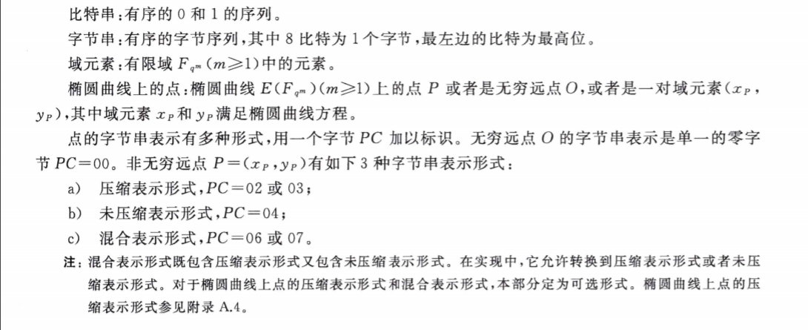
5.2.1 数据类型转换之间的关系
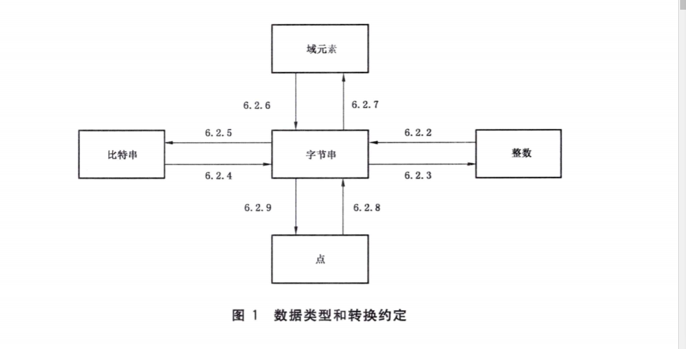
5.2.2 密码学杂凑函数
5.2.2.1 密码杂凑函数$$H_v()$$
密码杂凑函数$$H_v()$$的输入是长度恰为v比特的杂凑值。本部分规定使用国家密码管理主管部门批准的密码杂凑函数，如SM3密码杂凑算法。
5.2.2.2 密码函数$$H_1()$$
密码函数$$H_1(Z,n)$$的输入比比特串Z和整数n，输出为一个整数$$h_1\in[1,n-1]$$。$$H_1(Z,n)$$需要调用密码杂凑函数$$H_v()$$。
密码函数$$H_1(Z,n)$$:
输入：比特串Z，整数n
输出：整数$$h_1 \in [1,n-1]$$
-
初始化一个32比特构成的计数器ct=0x00000001;
-
计算$$hlen=8*\lceil 5*(log_2n)/32 \rceil$$
-
对i从1到$$\lceil hlen/v \rceil$$执行：
3.1 计算$$H_{a_i}=H_v(0x01||Z || ct)$$
3.2 ct++
-
若$$hlen/v$$是整数，令$$Ha!\lceil hlen/v \rceil = Ha \lceil hlen/v\rceil$$，
否则令$$Ha！_{\lceil hlen/v\rceil}$$为 $$Ha \lceil hlen/v\rceil$$最左边的$$(hlen-(v*\lfloor hlen/v \rfloor))$$比特
-
令$$Ha=Ha_1 || Ha_2 || …. || Ha_a{\lceil hlen/v \rceil -1 } || Ha!_{\lceil hlen/v \rceil}$$ 按照2.4和2.3的步骤将$$Ha$$ 比特串转换为整数。
-
计算$$h_2 = ({Ha} mod (n-1))+1$$
5.2.2.3 密码函数$$H_2()$$
密码函数$$H_2(Z,n)$$的输入比比特串Z和整数n，输出为一个整数$$h_2\in[1,n-1]$$。$$H_2(Z,n)$$需要调用密码杂凑函数$$H_v()$$。
密码函数$$H_2(Z,n)$$:
输入：比特串Z，整数n
输出：整数$$h_2 \in [1,n-1]$$
-
初始化一个32比特构成的计数器ct=0x00000001;
-
计算$$hlen=8*\lceil 5*(log_2n)/32 \rceil$$
-
对i从1到$$\lceil hlen/v \rceil$$执行：
3.1 计算$$H_{a_i}=H_v(0x02||Z || ct)$$
3.2 ct++
-
若$$hlen/v$$是整数，令$$Ha!\lceil hlen/v \rceil = Ha \lceil hlen/v\rceil$$，
否则令$$Ha！_{\lceil hlen/v\rceil}$$为 $$Ha \lceil hlen/v\rceil$$最左边的$$(hlen-(v*\lfloor hlen/v \rfloor))$$比特
-
令$$Ha=Ha_1 || Ha_2 || …. || Ha_a{\lceil hlen/v \rceil -1} || Ha!_{\lceil hlen/v \rceil}$$ 按照2.4和2.3的步骤将$$Ha$$ 比特串转换为整数。
-
计算$$h_2 = ({Ha} mod (n-1))+1$$
5.3 基于标识的数字签名算法
本部分描述了用椭圆曲线对实现的基于标识的数字签名算法。本部分适用于接收者通过签名者的标识验证数据的完整性和数据发送者的身份，也适用于第三方确定签名及所签数据的真实性。
该算法的签名者持有一个标识和一个相应的签名私钥，该签名私钥由密钥生成中心通过签名主私钥和签名者的标识结合产生。签名者用自身签名私钥对数据产生数字签名，验证者用签名者的标识验证签名的可靠性。
5.3.1 数字签名生成算法流程
设待签名的消息为比特串M，为了获取消息M的数字签名（h,S）,作为签名者的用户A实现以下步骤：
- 计算群$$G_T$$ 中的元素$$g=e(p_1,P_{pub-s})$$
- 产生随机数$$r\in[1,N-1]$$
- 计算群$$G_T$$ 中的元素$$w=g^r$$，并且按照上述的6.2.6 和6.2.5的细节将域元素转换为字节串然后转换为比特串。
- 计算整数$$h=H_2(M||w,N)$$
- 计算整数$$l=(r-h)modN$$，若$$l=0$$ 则返回A2
- 计算群G1中的元素S=$$d_{s_A}^l$$
- 按照上述数据转换流程将整数h的数据类型转换为字节串。将点S的数据类型转换为字节串，消息M的签名为$$(h,S)$$。
数据签名生成算法流程
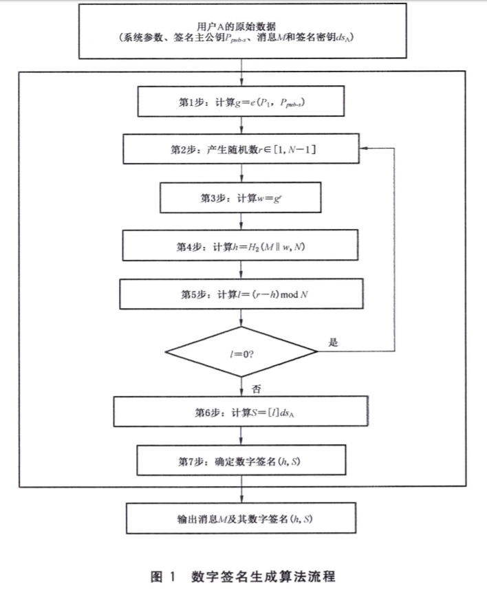
5.3 数字签名验证算法
为了检验收到的消息M及其数字签名(h,S)，作为验证者的用户B应实现以下运算步骤：
- 按照6.2.3的步骤将字符串转换为整数类型，检验$$h \in [1,N-1]$$是否成立，若不成立则验证不通过。
- 按照6.2.9步骤将字符串S的数据类型转换为椭圆曲线上的点，然后检验$$S\in G_1$$是否成立，若不成立则验证不通过
- 计算群$$G_T$$ 中的元素$$g=e(P_1,P_{pub-s})$$
- 计算群$$G_T$$中的元素$$t=g^h$$
- 计算整数$$h_1=H_1(ID_A||hid,N)$$
- 计算群$$G_2$$中的元素$$P=P_2^{h_1}+P_{pub-s}$$
- 计算群$$G_T$$中的元素$$u=e(S,P)$$
- 计算群$$G_T$$中的元素$$w=u*t$$，将域元素W按照6.2.6和6.2.5的步骤转换为数据类型比特串。
- 计算整数$$h_2=H_2(M||w,N)$$，检验h2=h是否成立，若成立则验证通过，否则验证不通过。
数字签名算法流程：
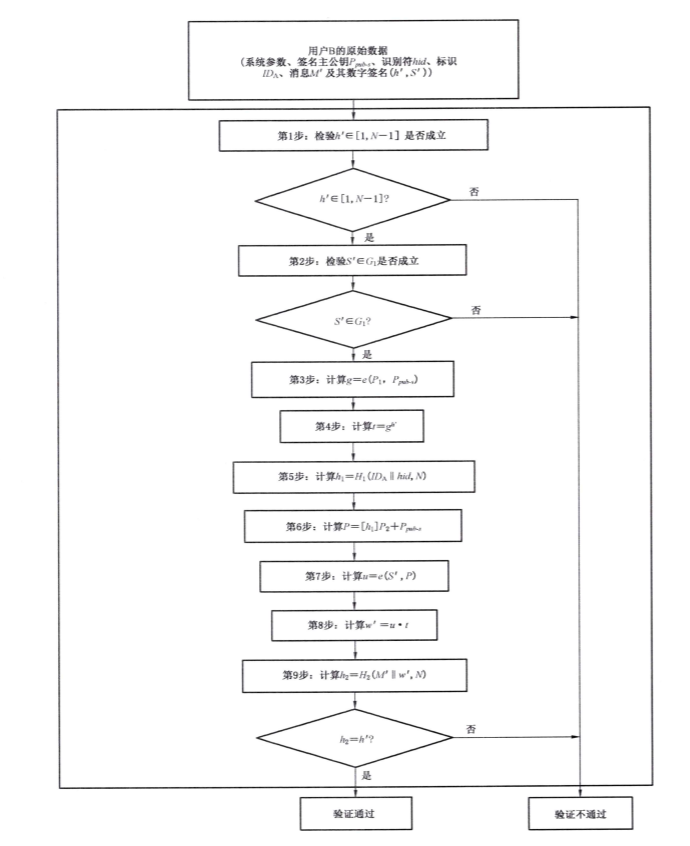
5.4 密钥封装和公钥加密
本部分规定了用椭圆曲线对实现的基于标识的密钥封装机制和公钥加密与解密算法。利用密钥封装机制可以封装密钥给特定实体。公钥加密与解密算法即基于标识的非对称密码算法，该算法使消息发送者可以利用接收者的标识对消息进行加密，唯有接收者可以用相应的私钥对密文进行解密，从未获取消息。
5.4.1 密钥封装算法
为了封装比特长度为klen的密钥给用户B，作为封装者的用户A需要执行以下运算步骤：
- 计算群G1中的元素$$Q_B=P_1^{[H_1(ID_B || hid,N)]} + p_{pub-e}$$
- 产生随机数$r\in[1,N-1]$
- 计算群G1中的元素$C=[r]Q_B$，按照2.8和2.5将点转化为字符串然后转化为比特串
- 计算群$G_T$中的元素$g=e(P_{pub-e},P_2)$
- 计算群$G_T$中的元素$w=g^r$，按照2.6和2.5的细节将w数据由域元素转化为字符串，然后转化为比特串。
- 计算$K=KDF(C||w||ID_B,klen)$，若K为全0比特串，则返回步骤2
- 输出(K,C)，其中K是被封装的密钥，C是封装密文。
具体步骤：
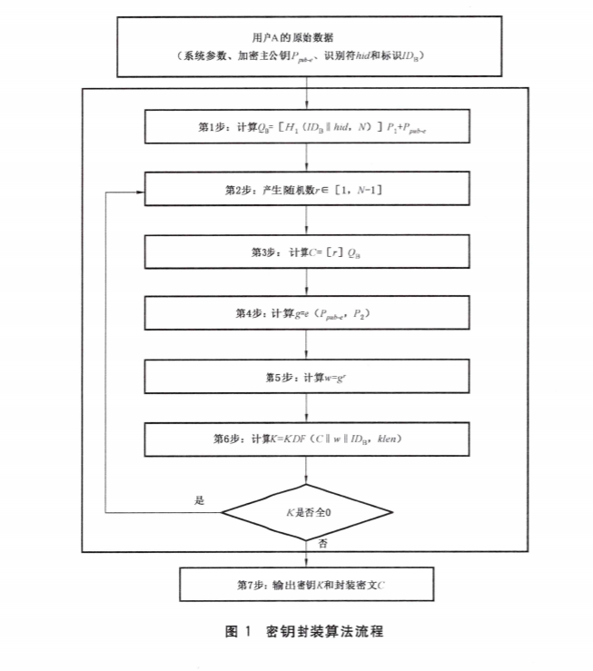
5.4.2 解封装算法
-
首先按照4.5给出的细节验证$C \in G_1$是否成立，若不成立则报错退出
-
计算群$G_T$中的元素$w=e(C,de_B)$，按照2.6和2.5给出的细节将w域元素转化为字符串再转化为比特串
-
按照2.6和2.5将C的数据类型由域元素转化为字符串再转化为比特串，计算封装的密钥$K=KDF(C||w||ID_B,klen)$，若K为全0比特串，则报错并且退出。
-
输出密钥K
具体步骤如下：
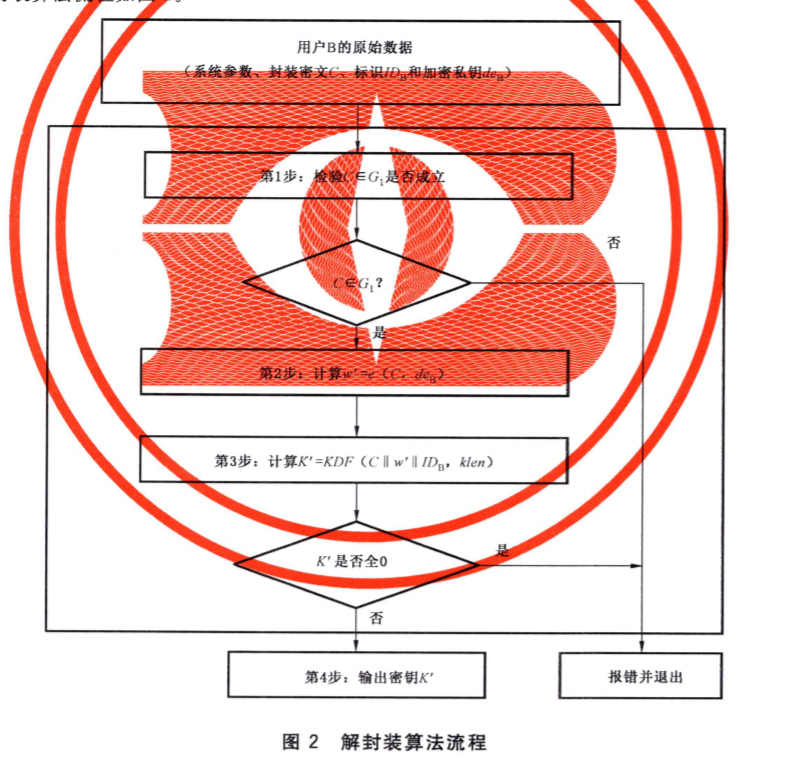
5.5 SM9_FREE的代码结构
SM9_FREE
├── Makefile
├── SM9Test.c
├── SM9文档 //SM9的文档，写的比官方文档要好懂一点
├── miracl //大数运算的基础库，为椭圆曲线有限域的运算提供基础
└── sm9
├── print_out.c // 格式化打印
├── print_out.h
├── sm3.c //SM3杂凑哈希
├── sm3.h
├── sm4.c //SM4对称加解密
├── sm4.h
├── sm9_algorithm.h
├── sm9_encrypt.c // SM9加解密
├── sm9_keyexchange.c //SM9密钥交换
├── sm9_setup.c
├── sm9_signature.c //SM9签名和验签
├── sm9_utils.c //SM9的工具函数，比如H1和H2的杂凑函数
├── sm9_utils.h
├── sm_r-ate.c // R-ate双线性对的运算
├── smzzn12.c // 为R-ate双线性对提供底层的双线性对计算
└── smzzn12.h
6.总结
SM9实现起来不是很容易，对于SM9_FREE的代码实现主要存在以下三个问题：
- 代码实现中的参数名称和文档中的参数名称对不上，导致代码理解起来不容易。
- 代码接口比较原始，使用起来不方便和文档流程对应不上。
- 对底层的
miracl大数运算的用法，以及r-ate的实现不清楚。
参考文献
[2] https://zhuanlan.zhihu.com/p/55758642
SM9的参考文档
[2] https://github.com/songgeng87/SM9_FREE/tree/master/SM9_FREE/SM9%E6%96%87%E6%A1%A3 (SM9实现的文档)
[3] https://github.com/guanzhi/GM-Standards/tree/master/GMT%E6%AD%A3%E5%BC%8F%E6%A0%87%E5%87%86 （SM9官方的文档）
[4] https://secbit.feishu.cn/file/boxcns9RDCY0HIfW3gcXIWWDcBc （飞书总结文档）